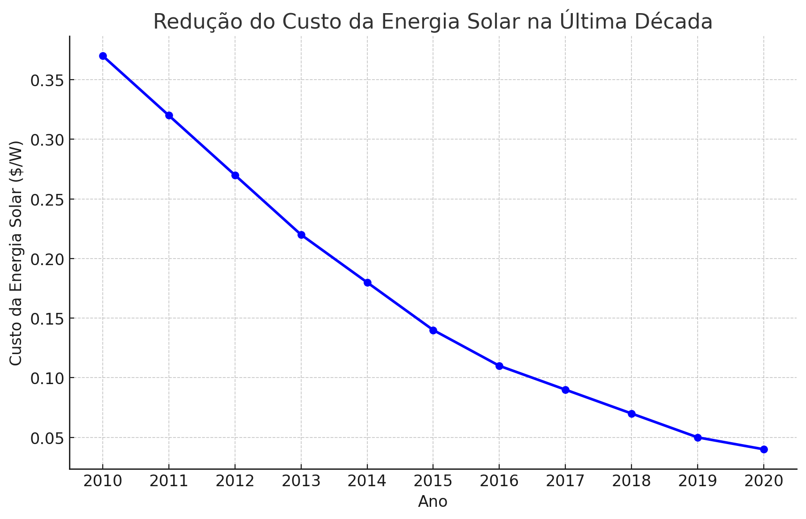
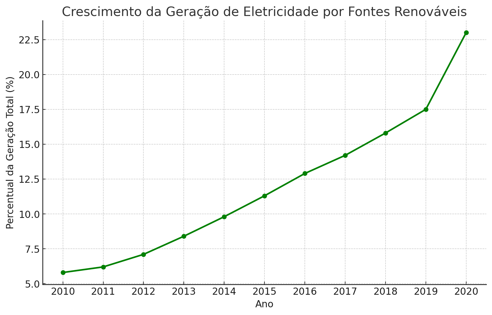

Benefícios de Investir em Energia Limpa
Por que Optar por Energia Acessível?
Gráficos Complementares
Acesso Global à Eletricidade

Redução do Custo da Energia Solar na Última Década

Crescimento da Geração de Eletricidade por Fontes Renováveis
